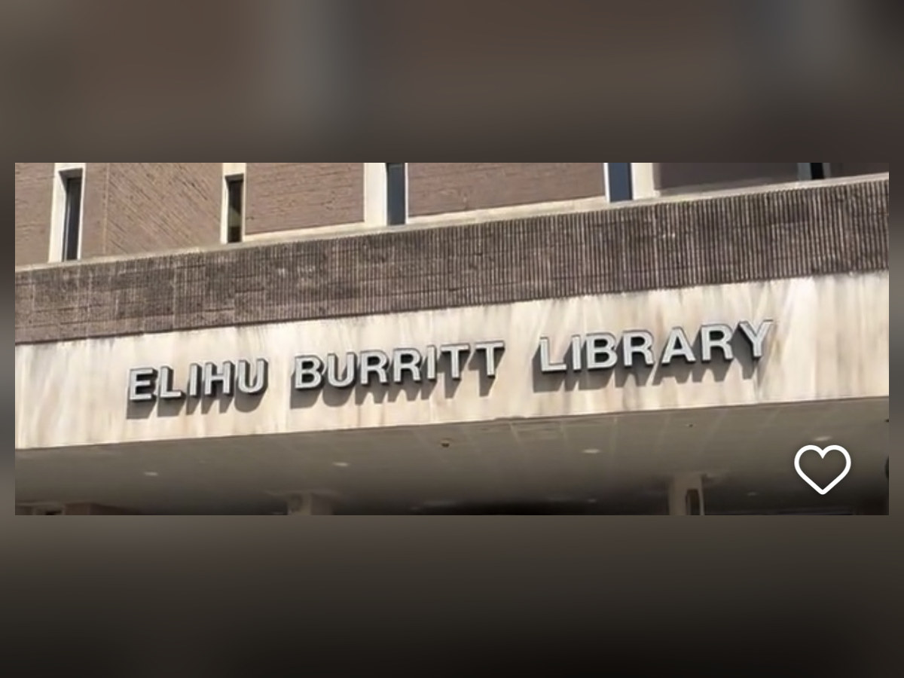
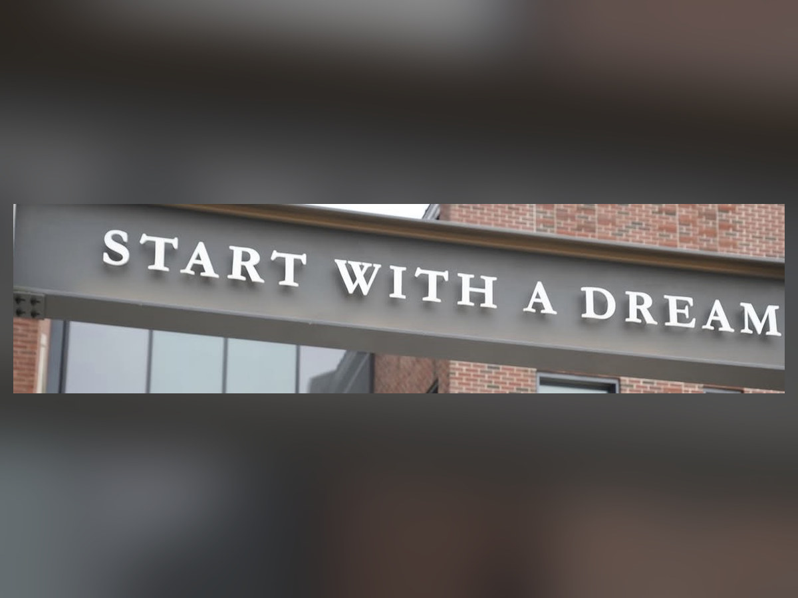
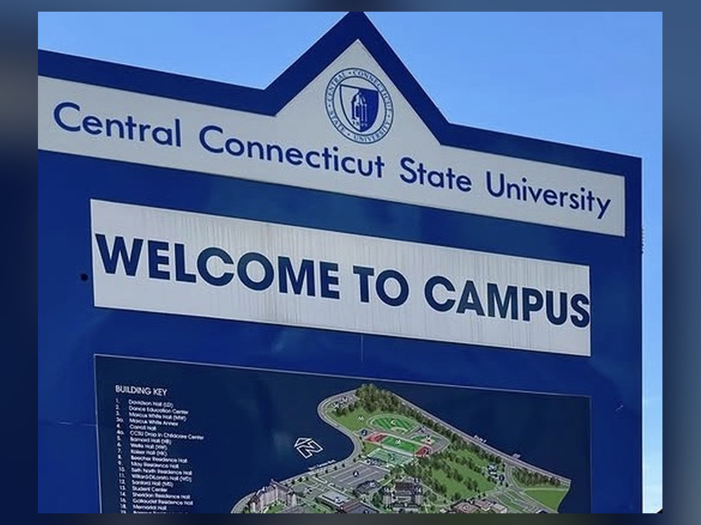
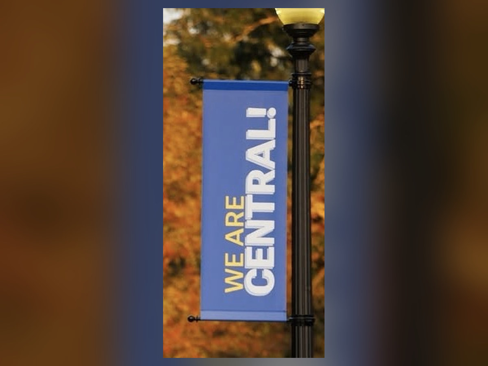
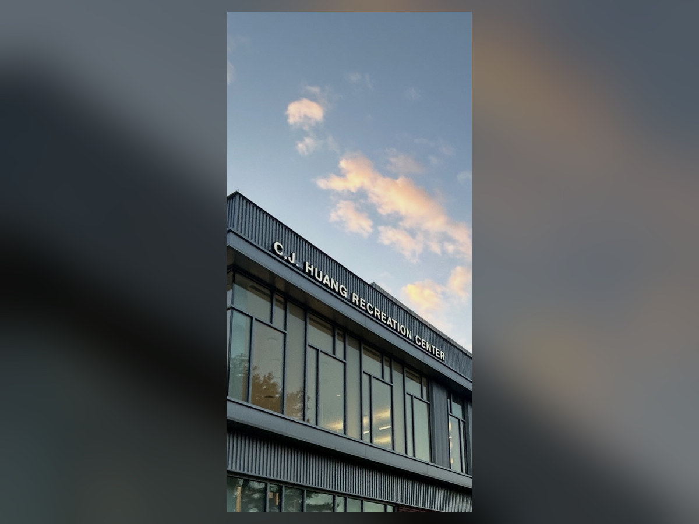
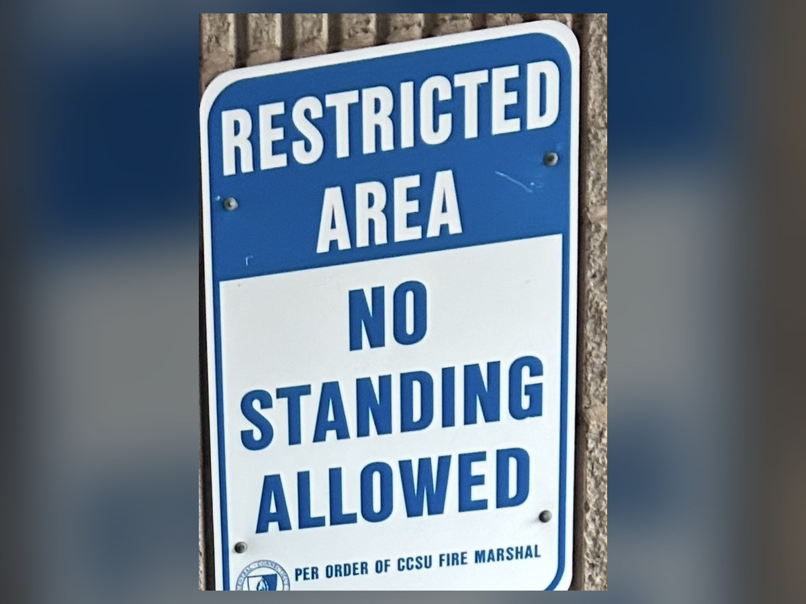
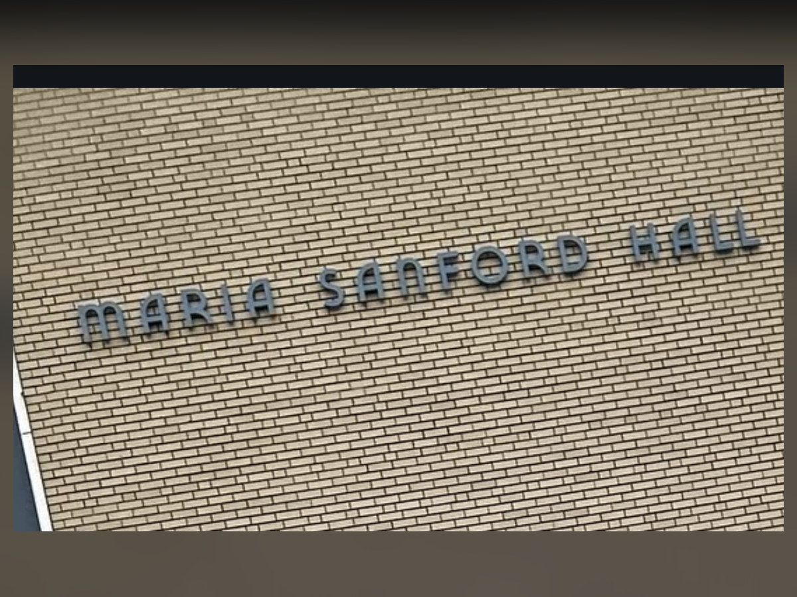
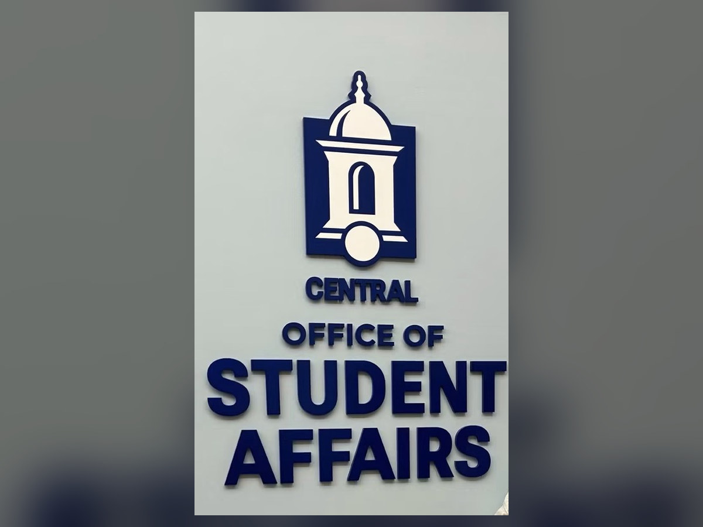

Finding typography around campus helped me notice how often letters and words are part of the environment. I photographed signs, buildings, banners, and other examples that caught my attention. Each example uses typography in a different way, from giving directions to identifying buildings. This project helped me see how typography communicates information while also becoming part of the campus's visual identity.

Elihu Burritt Library — Large dimensional lettering is mounted directly onto the building, making the typography part of the architecture.

Start With a Dream — Large serif lettering creates an inspirational message while standing out against the dark background.

Welcome to Campus — Bold sans-serif typography makes the campus entrance sign easy to read from a distance.

We Are Central — The vertical arrangement of the typography creates a strong visual layout and emphasizes the word "Central."

C.J. Huang Recreation Center — Clean, uppercase lettering identifies the building while following the modern architectural style.

Restricted Area — Bold uppercase typography is used to make the warning immediately noticeable and easy to understand.

Maria Sanford Hall — Individual dimensional letters are attached to the brick wall, creating a simple architectural sign.

Office of Student Affairs — Large blue typography creates a clear hierarchy, with "Student Affairs" receiving the most visual emphasis.